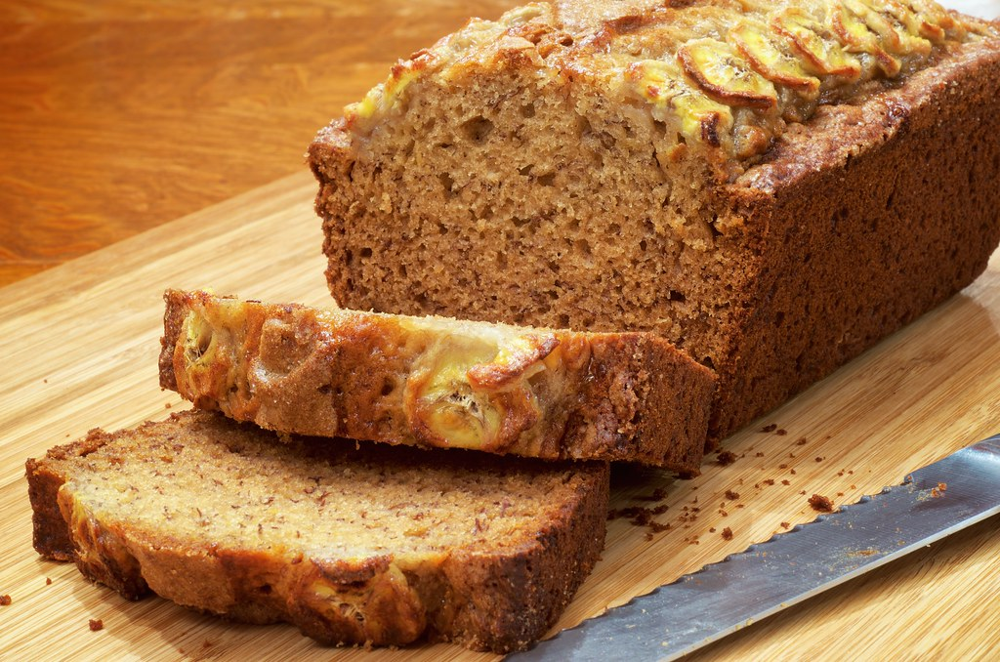

Banana Bread

Description
Banana bread is an American sweet bread primarily known for its use of overripe bananas.
It uses many of the same ingredients as normal bread, as is known as a "quick bread"
and actually more cake-like. It can be enhanced with nuts, raisins, and chocolate chips.
Ingredients
- 2 cups all-purpose flour
- 1 tsp baking soda
- 1/4 tsp salt
- 3/4 cup brown sugar
- 1/2 cup butter
- 2 large eggs, beaten
- 2 1/3 cups mashed overripe bananas
Steps
- Gather ingredients and preheat the oven to 350 degrees F
- Lightly grease a 9x5-in loaf pan
- Combine flour, baking soda, and salt in a large bowl
- Beat brown sugar and butter in a separate large bowl until smooth
- Stir in eggs and mashed bananas into sugar bowl until well blended
- Stir banana mixture into flour mixture until just combined
- Pour batter into loaf pan
- Bake in preheated oven for roughly 60 minutes
- Let bread cool in pan for 10 minutes
- Enjoy!